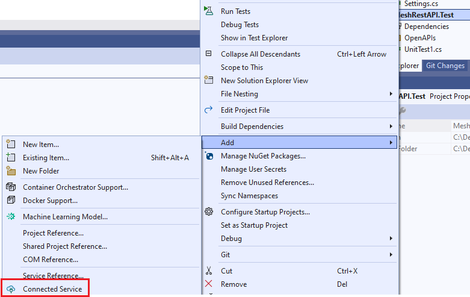
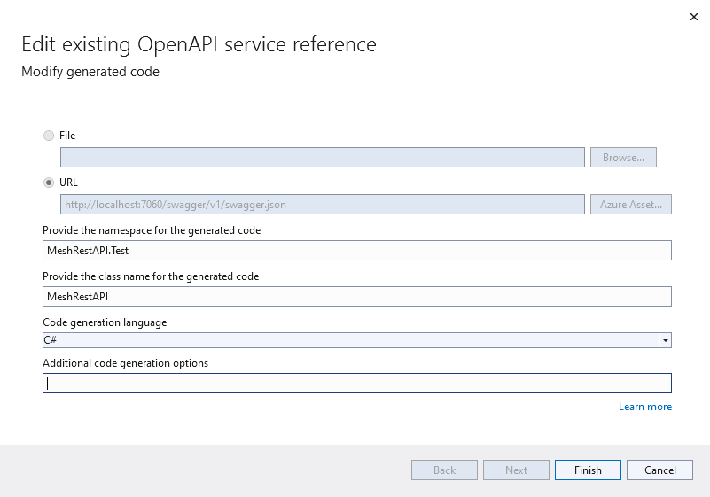
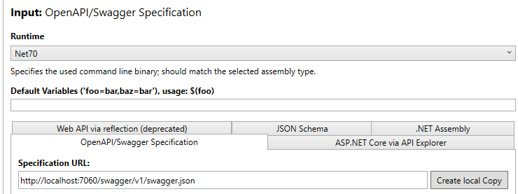
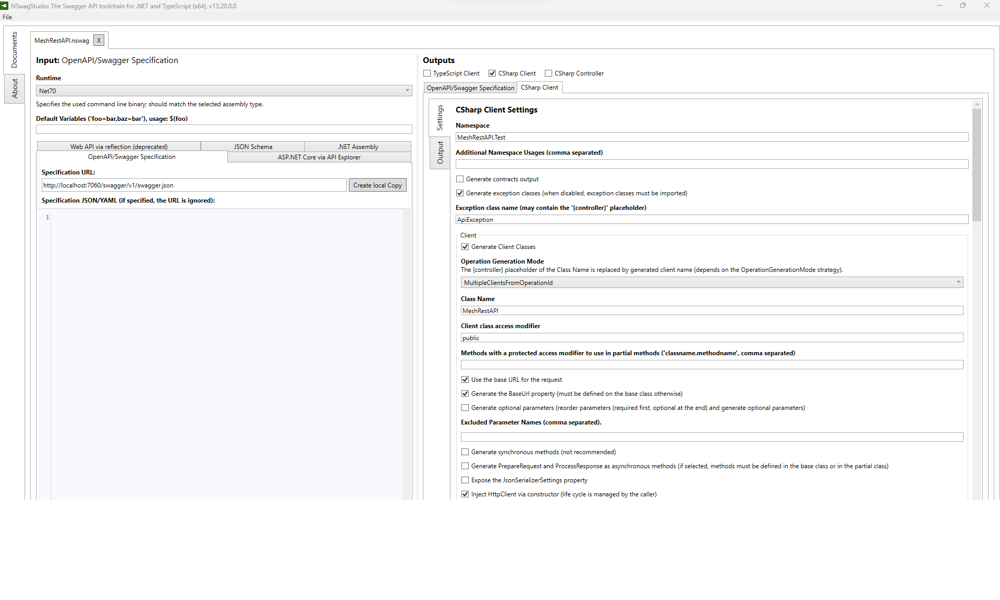

How to generate C# API from the swagger.json OpenAPI definition
Using Visual Studio 2022
The easiest solution is just to add a connected service to the project:

and then configure the API code creation:

When choosing Finish, the code is created as .\obj\swaggerClient.cs.
The only problem with the created code is that nullable object references in the OpenAPI description are not created as nullable in the C# code:
"timeseriesResource": {
"allOf": [
{
"$ref": "#/components/schemas/MeshTimeseriesResource"
}
],
"description": "Path to the time series in the Resources definition.",
"nullable": true
},
is converted to:
/// <summary>
/// Path to the time series in the Resources definition.
/// </summary>
[Newtonsoft.Json.JsonProperty("timeseriesResource", Required = Newtonsoft.Json.Required.Default, NullValueHandling = Newtonsoft.Json.NullValueHandling.Ignore)]
public MeshTimeseriesResource TimeseriesResource { get; set; }
which is not correct.
Make it right using the NSwagStudio
The utility may be downloaded from here.
Configure a NSwagStudio project
Do the following steps:
- Specify input:
- Select which runtime to use (e.g.
Net70). - In the
OpenAPI/Swagger Specificationfolder, enter the URL to the Mesh Rest API (e.g.http://localhost:7060/swagger/v1/swagger.json).

- Specify outputs:
- Select
CSharp Clientand select theCSharp Clientpage. -
Enter relevant text into the following attributes:
Namespace(same as the project the code is added to, f.ex.MeshRestAPI.Test).Class Name(f.ex.MeshRestAPI).- Select the
Generate Nullable Reference Type (NRT) annotations (C# 8)option. Output file path(f.ex.C:\Dev\energy-mesh-rest-api\src\MestRestAPI.Test\MeshRestAPI.cs).

-
Generate the code by choosing
Generate Filesin the lower right corner. -
Save the configuration using the
File\Saveoptions to a file in your project (e.g.C:\Dev\energy-mesh-rest-api\src\MestRestAPI.Test\MeshRestAPI.nswag).
You are then ready to use the API from your code.